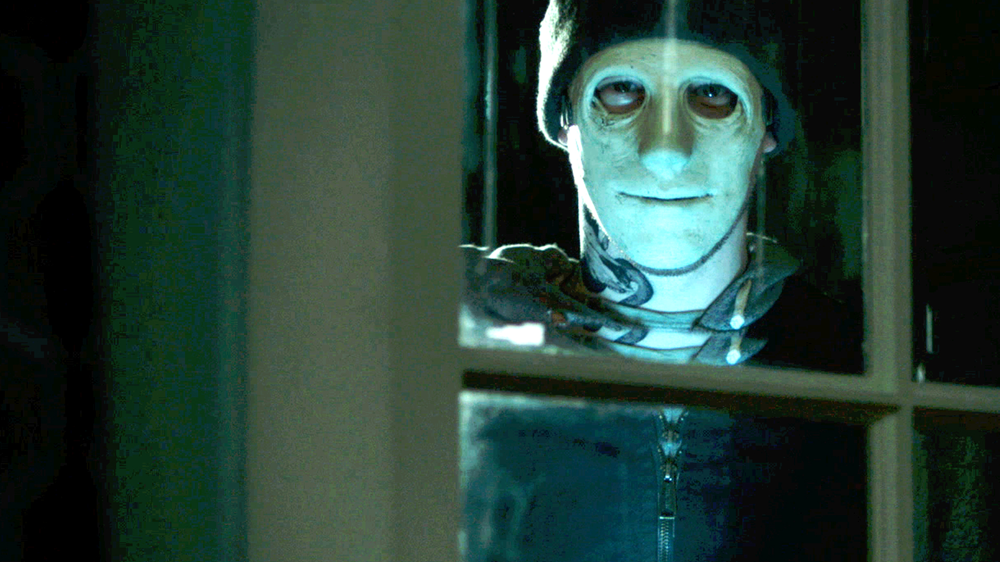
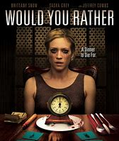
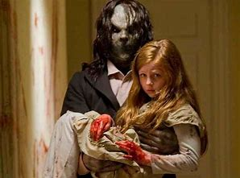

Horror
The best horror movies out there right now
Hush

Platform: Netflix
Rating: 94%
Rated: PG-13
Synoposis: A deaf woman is stalked by a psychotic killer in her secluded home.
Would You Rather

Platform: Netflix, Amazon, ITunes
Rating: 57%
Rated: PG-13
Synoposis: Desperate to help her ailing brother, a young woman unknowingly agrees to compete in a deadly game of "Would You Rather," hosted by a sadistic aristocrat
Sinister

Platform: Youtube, Amazon, Redbox
Rating: 64%
Rated: R
Synoposis: Ethan Hawke plays a true crime novelist who discovers a box of mysterious, disturbing home movies that plunge his family into a nightmarish experience of supernatural horror.